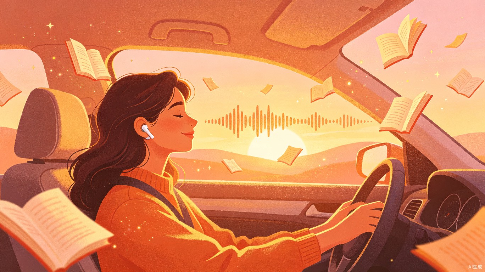
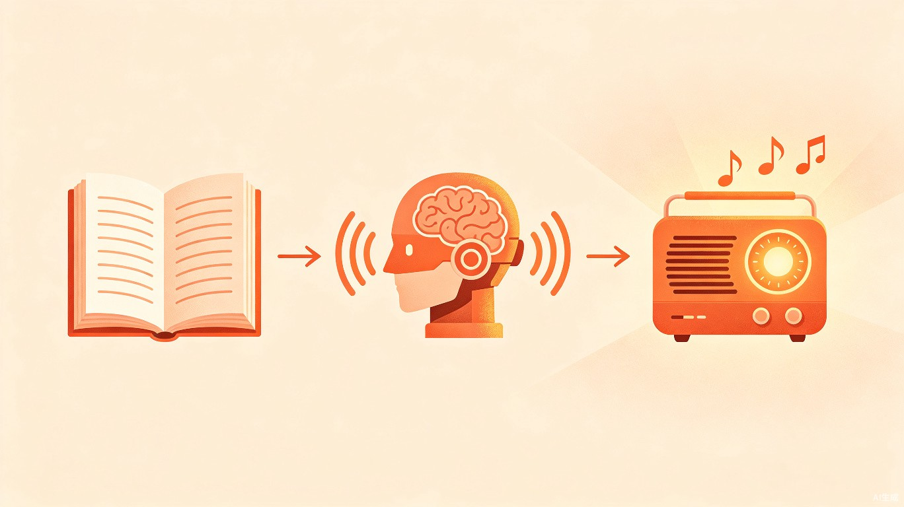

通勤路上
随时沉浸
开车时听、地铁上听、睡前听、运动时听……
任何你想听故事的 moments，打开即可继续。
🚗 开车通勤
🚇 公共交通
🛋️ 居家休闲
🏃 运动健身

让每一本小说，都能成为你的私人广播剧
Contents · 目录
为什么想做这个？灵感从何而来？
谁会用？在什么场景用？遇到什么问题？
这个产品能带来什么改变？
Section · 01
从通勤路上的一个念头，到一个产品的雏形
Pain Point · 痛点
爱听广播剧，但现实中处处受限
喜欢的小说很冷门，没有人制作对应的广播剧版本，只能自己阅读文字。
即使有广播剧，配音演员的声音、演绎风格可能不符合自己的想象，体验大打折扣。
主流平台如喜马拉雅订阅收费，想听的剧分散在不同平台，订阅费用累积不菲。

Inspiration · 灵感
自己每天上下班开车时都会听小说，之前也接触过广播剧。某一天突然想到：如果把这两个结合起来——用AI语音把小说文本变成广播剧，岂不是完美？
想听什么书就转什么书，想让谁"配音"就选谁的声音，完全按自己的心意来。
Product · 产品形态
面向个人用户的自用网站工具，暂不对外公开发布，主要解决自己和同好们的需求。
一键将小说文本转为多角色AI语音广播剧，支持自定义配音和背景音乐。
Section · 02
为谁而做？他们在什么场景下使用？
Users · 目标用户
每天开车或乘坐公共交通上下班，希望在通勤路上用听的方式消费内容，解放双眼和双手。
阅读量大，涉猎广泛，很多喜爱的小说没有广播剧版本，渴望将文字转化为听觉体验。
热爱广播剧这种内容形式，但对现有作品的声音演绎有特定偏好，希望能自定义"卡司"。
开车时听、地铁上听、睡前听、运动时听……
任何你想听故事的 moments，打开即可继续。
Comparison · 现状对比
Section · 03
这个产品能带来什么改变？
Value · 核心价值
TXT / EPUB 格式
角色识别与分词
多角色AI配音
含背景音与音效
选择喜欢的声音风格，调整语速、情感，打造专属的"理想卡司"。
无需等待人工制作和更新，上传文本后即可快速生成完整广播剧。
让每一本小说，都能成为你的私人广播剧